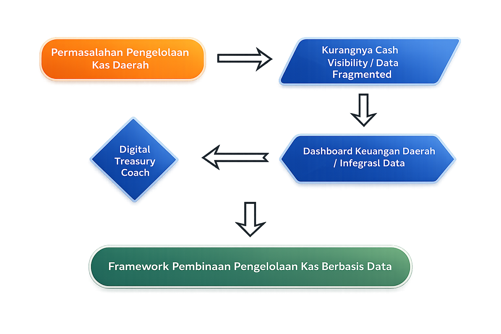

Konteks Strategis
Pengelolaan kas daerah berpengaruh langsung terhadap efektivitas layanan publik, stabilitas fiskal, dan pelaksanaan APBD. Masih terdapat kendala seperti proyeksi kas yang belum akurat, koordinasi belum optimal, monitoring belum real-time, mismatch arus kas, dan idle cash pada RKUD.
Diperlukan penguatan tata kelola kas yang lebih terencana, terintegrasi, dan berbasis data. DJPb berperan strategis sebagai Regional Chief Economist dalam mendorong pengelolaan kas negara yang modern dan akuntabel.
Urgensi Peran Kanwil DJPb
Kemampuan pembinaan DJPb terhadap pengelolaan kas sudah teruji pada edukasi/pembinaan pengelolaan keuangan satuan kerja (Satker) Kementerian/Lembaga (K/L) melalui Monitoring dan Evaluasi Pelaksanaan Anggaran Belanja K/L (Monev PA) dengan memberikan penilaian Indikator Pelaksanaan Anggaran (IKPA) Satker dan K/L.
Lebih lanjut dibutuhkan peran Kanwil DJPb dalam peningkatan pengelolaan keuangan daerah sebagai bagian dari Keuangan Negara.
“Kita harus memaknai frasa ‘Keuangan Negara’ di Forum Komunikasi Pengelola Keuangan Negara sebagai dana yang berasal dari APBN dan APBD”
— Suhaisil Nazara, Wamenkeu (MTI Vol.3/2021)
Apa Kebaharuan dari Inovasi Ini?
Kebaruan ilmiah (novelty) dari inovasi ini terletak pada tinjauan seberapa jauh Kanwil DJPb sebagai Regional Chief Economyst (RCE) dan Finacial Advisor (FA) dalam memberikan jawaban dan pembinaan kepada Pemda terkait tantangan dan hambatan Pengelolaan kas Daerah ke depan.
Kanwil DJPb di seluruh provinsi di Indonesia dapat memberikan pendampingan dalam pengelolaan kas daerah serta menjadi tempat konsultasi bagi Pemda terkait dengan pengelolaan keuangan.
Deviasi Perencanaan Kas
Deviasi antara rencana dan realisasi kas daerah masih relatif tinggi, sehingga diperlukan penguatan pembinaan dan pendampingan Kanwil DJPb dalam fungsi TREFA.
Data Belum Real-Time
Integrasi data kas antara Pemda, KPPN, dan Kanwil DJPb belum real-time sehingga monitoring kas dan proyeksi regional belum optimal.
Penguatan Peran Pembinaan
Pembinaan telah berjalan, namun perlu penguatan pada integrasi data, pendampingan cash forecasting, dan pembinaan proaktif berbasis digital.
Dasar Hukum
- PP 39/2007Penyusunan Renkas Pemda
- PMK 262/2016Asistensi & Advisory DJPb
- KEP-2/PB/2023Partnership & Data Analytics
- PER-1/PB/2023Pembinaan & Supervisi KPPN
- Permendagri 77/2020Kebijakan Kas Daerah
Perbandingan RPD Pemda dan K/L APBN TA 2025
Perbandingan realisasi menunjukkan pengelolaan kas daerah belum optimal, ditandai dengan perencanaan tidak periodik dan belum didukung regulasi teknis.

Gambaran Deviasi Kas Pemda Sumatera Utara
Deviasi antara rencana dan realisasi kas masih tinggi, menunjukkan perlunya pembinaan berbasis data oleh Kanwil DJPb.

Hasil Analisis Data (Metode wMAPE)
| Metrik | Pemda | Pusat | Catatan Pengelolaan Kas |
|---|---|---|---|
| wMAPE | 47,32% | 8,79% | Deviasi pada pengelolaan kas Pemda tahun 2025 5,4× lebih tinggi dari pusat. Akurasi RPD bulanan Pemda perlu perbaikan besar dan merupakan potensi fokus pembinaan pengelolaan keuangan negara oleh DJPb. |
| MPE (bias) | -34,77% | -7,88% | Pemda mengalami under-realization jauh lebih tinggi dari pemerintah pusat. Hal ini memaksa pemda untuk menekan belanja dan menerapkan kebijakan surplus arus kas dengan menggeser pembayaran belanja ke bulan berikutnya. |
| CV (Koefisien variasi) | 0,587 | 0,254 | Volatilitas Pemda 2,3× lebih tinggi yang disebabkan perencanaan kas yang tidak baik. Hal ini menyebabkan buffer kas harus lebih besar dan risiko cash rationing lebih tinggi. Cash Rationing adalah kebijakan pembatasan pengeluaran kas secara ketat karena jumlah uang yang tersedia tidak cukup untuk membiayai semua rencana belanja yang ada terutama ketika target PAD belum tercapai. |
| Tools | Belum tersedia | Tersedia | Pemerintah pusat telah memiliki peraturan lengkap untuk pengelolaan kas baik dari sisi perencanaan, standar deviasi dan alat untuk monitoring berupa dashboard pada OMSPAN dan MyIntress. Kondisi ini dapat diterapkan pada pemerintah daerah dengan strategi pembinaan Digital Treasury Coach. |
Rekomendasi Kebijakan
Peran Kanwil DJPb yang lebih strategis, proaktif, dan berbasis data

Prasyarat Framework
- Pembentukan forum koordinasi berkala
- Komitmen pendampingan rutin
- Pembentukan Dashboard Keuangan Daerah / integrasi data
- Standardisasi database dan format laporan Pemda
Komponen Digital Treasury Coaching
- Treasury Dashboard Berbasis Data
- E-Coaching Clinic (Klinik Pembinaan Digital)
- Digital SOP & Knowledge Repository
Transformasi Pembinaan Menuju Digital Treasury Coaching
Perbandingan pendekatan lama dengan model pembinaan berbasis data dan dashboard
- Pembinaan pasif / menunggu inisiatif Pemda
- Workshop / FGD / Sosialisasi tatap muka
- Rekap laporan manual
- Pembinaan reaktif
- Satu arah
- Pembinaan berkelanjutan dengan sasaran jelas & terukur
- Coaching digital & tailor made per Pemda
- Dashboard real-time dengan integrasi data
- Pembinaan proaktif (trigger-based)
- Dua arah & interaktif